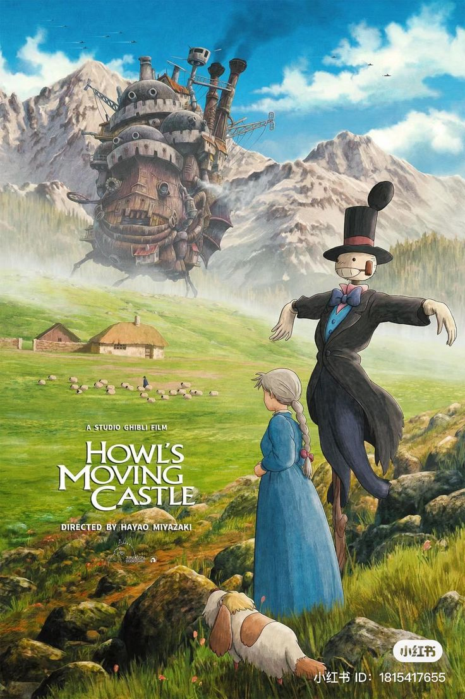
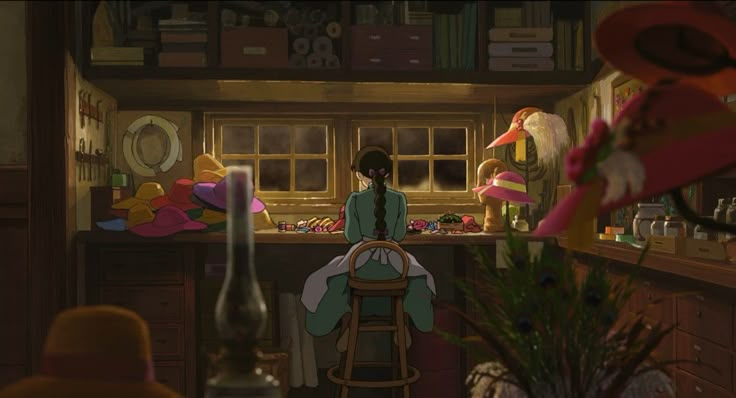
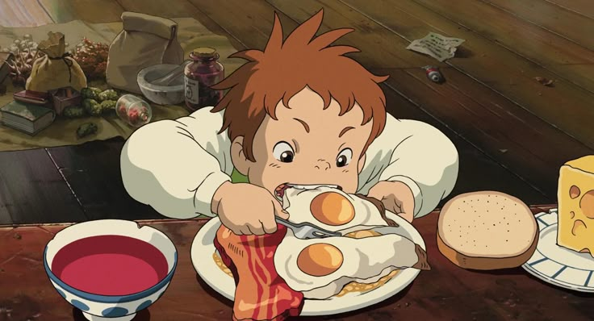
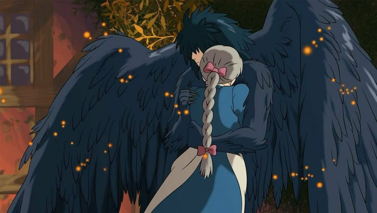
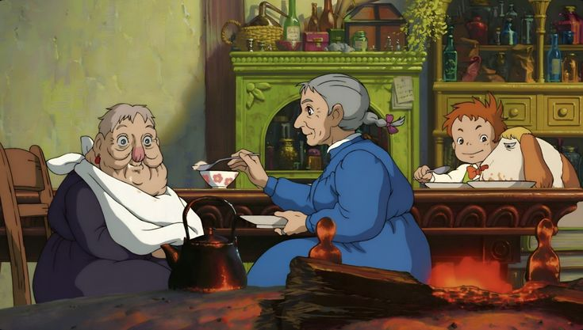

Howl's Moving Castle
Історія юної капелюшниці Софі, життя якої перевертається догори дриґом з того часу, як відьма наклала на неї прокляття. Злі чари перетворили молоду дівчину на стареньку бабусю. Намагаючись зняти прокляття Софі потрапляє до дивного замку на чотирьох ногах, який наче зійшов з полотен Ієроніма Босха




"У старості є одна перевага — нічого не страшно"